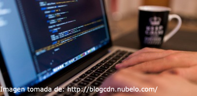
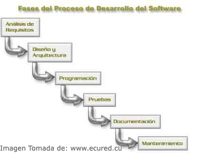

Proceso de desarrollo de software
Proceso de desarrollo de software
El software se puede definir como la serie de instrucciones escritas en lenguaje de programación que hacen que un computador cumpla una tarea determinada. La invención del software ha contribuido enormemente al avance de los sistemas computacionales, actualmente el desarrollo de software va en crecimiento y se ha convertido en una industria con mucho campo, pues cada persona o empresa necesita de un software que le ayude a realizar de la mejor manera, empleando el menor tiempo posible, un trabajo específico.
Como todo producto el desarrollo de software requiere de un proceso que garantice su calidad a la hora de producirlo, usarlo y mantenerlo. En este sentido el proceso de desarrollo de software se refiere al conjunto de acciones que se tienen en cuenta a la hora de producir un software. Este proceso incluye muchas personas e inicia con el cliente, quien tiene un problema en su empresa o negocio y requiere de ayude para resolverlo, este problema es analizado por personal de la empresa desarrolladora de software, quienes se ocupan de transmitir los requisitos y necesidades del cliente al personal encargado del diseño y programación del software, al finalizar su trabajo se hace la instalación y prueba del software con los respectivos ajustes para que cumpla con la tarea para lo cual fue diseñado.
El primer paso que podemos identificar, de acuerdo a lo anterior, es el análisis de los requisitos. El cliente plantea lo que quiere o lo que él piensa que debe hacer el software, mientras que los analistas haciendo uso de sus habilidades y experiencia hacen un estudio de lo que se pide para identificar los requisitos del software y evitar que hayan ambigüedades o contradicciones. En el siguiente paso se determina el funcionamiento del software de manera general teniendo en cuenta las funciones que realizará y la plataforma de hardware en la cual se implementará. Después llega el trabajo de programación, donde se convierten los diseños en códigos para concretar el producto, es decir hacer uso de lenguajes de programación para construir el software planeado.
Pareciera que ya todo ha terminado pero no es así, pues el proceso no termina con la obtención del software, es hora de realizar las pruebas para verificar el funcionamiento correcto del software, esta parte se recomienda que se haga por módulos, es decir probar cada parte del software y después el software en conjunto, es importante que las pruebas también las realice alguien distinto al programador que construyó el programa, por lo que la empresa desarrolladora debería contar con un área para tal fin. No se puede olvidar la parte de documentación del software en la que se incluya todo lo concerniente al proceso desarrollado, a los manuales para el usuario, manuales técnicos y demás que permitan procesos posteriores como mantenimiento, ampliación, correcciones, etc.
La responsabilidad en el desarrollo del software no termina con la entrega del software, pues además debe prestar mantenimiento al software con el objetivo de mejorarlo, descubrir y corregir posibles errores, realizar los cambios de acuerdo a nuevos requisitos, ampliar el software, en fin, el mantenimiento es una parte muy importante en el proceso de desarrollo de software y posiblemente sea la más larga del proceso.
Por todo lo anterior podemos concluir que en el desarrollo de software se realizan una serie de pasos que contribuyen con lograr el objetivo propuesto, producir software de calidad, que cumpla con la tarea para el cual ha sido creado a satisfacción del cliente y para tal fin se requiere poner en práctica un procedimiento que se encuentra enmarcado en lo que se conoce como modelo de desarrollo de software, de los cuales existen varios y que podemos ver en la siguiente lectura.
Jair de Jesús Acosta Núñez
Referencias bibliográficas
Ecured. Desarrollo de software. Recuperado de: https://www.ecured.cu/Desarrollo_de_software
Weitzenfel, a & Guardati, S (2007). Ingeniería de software: el proceso para el desarrollo del software. Recuperado de: http://weitzenfeld.robolat.org/wp-content/uploads/2015/01/WeitzenfeldGuardatiComputacion2008.pdf
Curso: Diseño de sitios web
Diseño Web: Grupo: 301122_3
UNAD - 2016